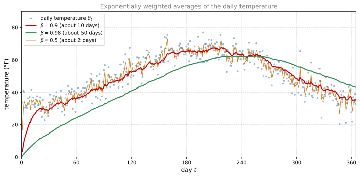
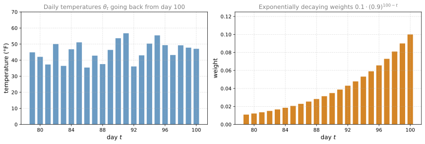
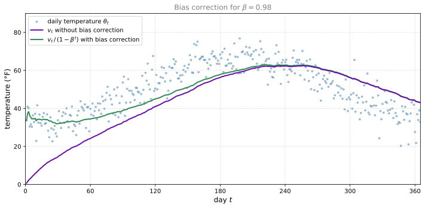

Exponentially Weighted Averages
deep-learning
optimization
moving-averages
bias-correction
Exponentially weighted moving averages, the effect of beta, why the formula averages over 1/(1-beta) days, and bias correction.
There are a few optimization algorithms that are faster than gradient descent. In order to understand those algorithms, you need to be able to use something called exponentially weighted averages, also called exponentially weighted moving averages in statistics. This page builds that tool first. The next page then uses it to build up more sophisticated optimization algorithms than the mini-batch gradient descent covered earlier.
Exponentially Weighted Averages
Take as a running example the daily temperature in London over one year. On January 1 the temperature was 40 degrees Fahrenheit (4 degrees Celsius). On January 2 it was 9 degrees Celsius. About halfway through the year, around day 180 in late May or so, it was 60 degrees Fahrenheit, which is 15 degrees Celsius. It gets warmer toward summer and it was colder in January, so if you plot the data, it looks a little bit noisy.
If you want to compute the trends, the local average or a moving average of the temperature, here is what you can do. Let \(\theta_t\) be the temperature on day \(t\). Initialize \(v_0 = 0\), and then on every day, average the running value with a weight of 0.9 times the previous value plus 0.1 times that day’s temperature,
\[ \begin{aligned} v_0 &= 0 \\ v_1 &= 0.9\, v_0 + 0.1\, \theta_1 \\ v_2 &= 0.9\, v_1 + 0.1\, \theta_2 \\ v_3 &= 0.9\, v_2 + 0.1\, \theta_3 \\ &\;\;\vdots \end{aligned} \]
The general formula is
\[ v_t = 0.9\, v_{t-1} + 0.1\, \theta_t \]
If you compute this and plot it in red on top of the daily temperatures, you get a moving average, what is called an exponentially weighted average of the daily temperature.
Now replace the 0.9 by a parameter \(\beta\), so the previous 0.1 becomes \(1 - \beta\),
\[ v_t = \beta\, v_{t-1} + (1 - \beta)\, \theta_t \]
so previously we had \(\beta = 0.9\). It turns out, for reasons given in the next section, that you can think of \(v_t\) as approximately averaging over the last
\[ \frac{1}{1 - \beta} \text{ days} \]
of temperature. For example, with \(\beta = 0.9\) you can think of this as averaging over the last 10 days of temperature, and that is the red line below.
Now let us try setting \(\beta\) very close to one, say \(\beta = 0.98\). Then \(\frac{1}{1 - 0.98} = 50\), so think of this as averaging over roughly the last 50 days of temperature, plotted as the green line. Notice a couple of things about this very high value of \(\beta\). The plot you get is much smoother, because you are now averaging over more days of temperature, so the curve is less wavy. But on the flip side, the curve has shifted further to the right, because you are averaging over a much larger window of temperatures. By averaging over a larger window, the formula adapts more slowly when the temperature changes, so there is a bit more latency. The reason is that when \(\beta = 0.98\), you are giving a lot of weight to the previous value and a much smaller weight, just 0.02, to whatever you are seeing right now. So when the temperature goes up or down, the exponentially weighted average adapts more slowly.
Now try the other extreme, \(\beta = 0.5\). By the same formula, this is like averaging over just \(\frac{1}{1 - 0.5} = 2\) days of temperature, plotted as the yellow line. Averaging over only two days, it is as if you are averaging over a much shorter window, so the result is much more noisy, much more susceptible to outliers. But it adapts much more quickly to temperature changes.
So the formula \(v_t = \beta v_{t-1} + (1 - \beta)\theta_t\) is how you implement an exponentially weighted average, called an exponentially weighted moving average in the statistics literature (we will call it exponentially weighted average for short). By varying the parameter \(\beta\), which will later be a hyperparameter of your learning algorithm, you get slightly different effects, and there is usually some value in between that works best. Here it is the red curve of \(\beta = 0.9\) that averages the temperature better than either the green or the yellow curve.
Review Questions
1. In the update \(v_t = \beta v_{t-1} + (1-\beta)\theta_t\), roughly how many days of temperature is \(v_t\) averaging over, and what does that give for \(\beta = 0.9\), \(\beta = 0.98\), and \(\beta = 0.5\)?
TipAnswer
Roughly the last \(\frac{1}{1-\beta}\) days. For \(\beta = 0.9\) that is about 10 days, for \(\beta = 0.98\) about 50 days, and for \(\beta = 0.5\) about 2 days.
1. What happens to the moving-average curve when you increase \(\beta\) from 0.9 to 0.98, and why?
TipAnswer
The curve becomes much smoother, because it averages over more days, but it also shifts to the right and adapts more slowly when the temperature changes, so there is more latency. This is because with \(\beta = 0.98\) the update gives a lot of weight (0.98) to the previous value and only a small weight (0.02) to the current day’s temperature. Lowering \(\beta\) has the opposite effect. The curve reacts faster but becomes noisier and more susceptible to outliers.
1. The red line in the figure above was computed with \(\beta = 0.9\). What would happen to the red curve as you vary \(\beta\)? (Check the two that apply.)
Decreasing \(\beta\) will shift the red line slightly to the right.
Increasing \(\beta\) will shift the red line slightly to the right.
Decreasing \(\beta\) will create more oscillation within the red line.
Increasing \(\beta\) will create more oscillations within the red line.
TipAnswer
b and c. Increasing \(\beta\) averages over a larger window of past days, so the curve adapts more slowly and shifts to the right, like the green \(\beta = 0.98\) line. Decreasing \(\beta\) averages over fewer days, so the curve becomes noisier and more susceptible to outliers, like the yellow \(\beta = 0.5\) line.
Understanding Exponentially Weighted Averages
The moving average will turn out to be a key component of several optimization algorithms used to train neural networks. This section digs a little deeper into the intuition for what the formula
\[ v_t = \beta\, v_{t-1} + (1 - \beta)\, \theta_t \]
is really doing. Set \(\beta = 0.9\) and write out a few of the equations. When implementing it, \(t\) runs upward from 0 to 1 to 2 to 3, but to analyze it, write it with decreasing values of \(t\),
\[ \begin{aligned} v_{100} &= 0.9\, v_{99} + 0.1\, \theta_{100} \\ v_{99} &= 0.9\, v_{98} + 0.1\, \theta_{99} \\ v_{98} &= 0.9\, v_{97} + 0.1\, \theta_{98} \\ &\;\;\vdots \end{aligned} \]
Now take the first equation and figure out what \(v_{100}\) really is. Substituting the second equation into the first, and then the third into that, and so on,
\[ \begin{aligned} v_{100} &= 0.1\, \theta_{100} + 0.9\, v_{99} \\ &= 0.1\, \theta_{100} + 0.9\, (0.1\, \theta_{99} + 0.9\, v_{98}) \\ &= 0.1\, \theta_{100} + 0.9\, \left( 0.1\, \theta_{99} + 0.9\, (0.1\, \theta_{98} + 0.9\, v_{97}) \right) \end{aligned} \]
If you multiply all of these terms out, you can show that
\[ v_{100} = 0.1\, \theta_{100} + 0.1 \cdot 0.9\, \theta_{99} + 0.1 \cdot (0.9)^2\, \theta_{98} + 0.1 \cdot (0.9)^3\, \theta_{97} + 0.1 \cdot (0.9)^4\, \theta_{96} + \cdots \]
So this really is a weighted sum, a weighted average of \(\theta_{100}\), which is the current day’s temperature, together with \(\theta_{99}\), \(\theta_{98}\), \(\theta_{97}\), \(\theta_{96}\), and so on, from the perspective of \(v_{100}\) computed on the 100th day of the year.
One way to picture this is to put two functions side by side. The first is the sequence of daily temperatures \(\theta_{100}, \theta_{99}, \theta_{98}, \dots\) as you go back in time. The second is an exponentially decaying function starting at 0.1, then \(0.1 \cdot 0.9\), then \(0.1 \cdot (0.9)^2\), and so on. The way you compute \(v_{100}\) is to take the elementwise product between these two functions and sum it up. You take \(\theta_{100}\) times 0.1, plus \(\theta_{99}\) times \(0.1 \cdot 0.9\) (the second term), and so on. It is really taking the daily temperature, multiplying it by this exponentially decaying function, and summing up, and this becomes \(v_{100}\).

It turns out (up to details covered in the bias correction section below) that all of these coefficients add up to one, or very close to one, and because of that this really is an exponentially weighted average.
Why About \(\frac{1}{1 - \beta}\) Days
Finally, you might wonder how many days of temperature this is averaging over. It turns out that
\[ (0.9)^{10} \approx 0.35 \approx \frac{1}{e} \]
where \(e\) is the base of the natural logarithm. More generally, if \(\epsilon = 1 - \beta\) (so \(\epsilon = 0.1\) when \(\beta = 0.9\)), then
\[ (1 - \epsilon)^{1/\epsilon} \approx \frac{1}{e} \approx 0.35 \]
In other words, it takes about 10 days for the weight to decay to around a third (\(\frac{1}{e}\)) of the weight of the current day. That is why, when \(\beta = 0.9\), we say this is like computing an exponentially weighted average that focuses on just the last 10 days of temperature, because after 10 days the weight has decayed to less than about a third of the weight on the current day.
In contrast, if \(\beta = 0.98\), what power do you need to raise 0.98 to for it to become really small? Since \((0.98)^{50} \approx \frac{1}{e}\), the weights stay bigger than \(\frac{1}{e}\) for the first 50 days and then decay quite rapidly after that. So intuitively you can think of \(\beta = 0.98\) as averaging over about 50 days of temperature. In the \(\epsilon\) notation, \(\epsilon = 0.02\) and \(\frac{1}{\epsilon} = 50\), which is how we got the formula that we are averaging over roughly \(\frac{1}{1 - \beta}\) days. This is only a rule of thumb for how to think about it, not a formal mathematical statement.
Implementation
To explain the algorithm, it was useful to write down \(v_0, v_1, v_2, \dots\) as distinct variables. But if you are implementing this in practice, you do not keep them all. You initialize \(v = 0\), and then on day one set \(v := \beta v + (1 - \beta)\theta_1\), on the next day \(v := \beta v + (1 - \beta)\theta_2\), and so on, overwriting the same variable. Some people use the notation \(v_\theta\) to denote that \(v\) is computing the exponentially weighted average of the parameter \(\theta\). Written as a loop,
\[ \begin{aligned} &v_\theta := 0 \\ &\text{repeat for each day:} \\ &\qquad \text{get the next } \theta_t \\ &\qquad v_\theta := \beta\, v_\theta + (1 - \beta)\, \theta_t \end{aligned} \]
One of the advantages of this formula is that it takes very little memory. You keep just one real number in computer memory and keep overwriting it with the latest value. It is really this efficiency that matters. It takes basically one line of code, and storage for a single real number, to compute the exponentially weighted average.
It is not the best or most accurate way to compute an average. If you computed a moving window, explicitly summing the last 10 or 50 days of temperature and dividing by 10 or 50, that usually gives a better estimate. But the disadvantage is that explicitly keeping all those temperatures around requires more memory, is more complicated to implement, and is computationally more expensive. For applications where you need to compute averages of a lot of variables, as in the optimization algorithms on the next page, the exponentially weighted average is a very efficient way to do so, both from a computation and a memory point of view, which is why it is used in a lot of machine learning. Not to mention that it is just one line of code, which is maybe another advantage.
Review Questions
1. Expand \(v_{100}\) for \(\beta = 0.9\). What is the coefficient on \(\theta_{98}\), and what shape do the coefficients trace out as you go back in time?
TipAnswer
Substituting the recurrence into itself gives \[ v_{100} = 0.1\,\theta_{100} + 0.1 \cdot 0.9\,\theta_{99} + 0.1 \cdot (0.9)^2\,\theta_{98} + 0.1 \cdot (0.9)^3\,\theta_{97} + \cdots \] so the coefficient on \(\theta_{98}\) is \(0.1 \cdot (0.9)^2\). The coefficients trace out an exponentially decaying function, and \(v_{100}\) is the elementwise product of the temperatures with that decaying function, summed up. The coefficients add up to (very close to) one, which is what makes this a weighted average.
1. Why do we say \(\beta = 0.9\) averages over about 10 days? Connect your answer to the number \(\frac{1}{e}\).
TipAnswer
Because \((0.9)^{10} \approx 0.35 \approx \frac{1}{e}\). After going back about 10 days, the weight has decayed to less than about a third of the weight on the current day, so days further back contribute relatively little. In general \((1-\epsilon)^{1/\epsilon} \approx \frac{1}{e}\) with \(\epsilon = 1 - \beta\), giving the rule of thumb of averaging over roughly \(\frac{1}{1-\beta}\) days. It is a rule of thumb, not a formal mathematical statement.
1. Compared with explicitly averaging the last 50 days in a moving window, what are the advantages and the disadvantage of the exponentially weighted average?
TipAnswer
Advantages are efficiency. It needs memory for only a single number per averaged quantity, it is one line of code, and it is computationally cheap, which matters when you need moving averages of a lot of variables. The disadvantage is accuracy. An explicit moving window over the last 10 or 50 values usually gives a better estimate of the average.
Bias Correction
There is one technical detail called bias correction that can make your computation of these averages more accurate. In the previous sections, the green curve was described as what you get with \(\beta = 0.98\). But if you implement the formula exactly as written, you do not actually get the green curve. You get a curve that starts off really low (purple in the plot below).

Here is why. When implementing the moving average with \(\beta = 0.98\), you initialize \(v_0 = 0\), and then
\[ v_1 = 0.98\, v_0 + 0.02\, \theta_1 = 0.02\, \theta_1 \]
since the \(v_0\) term is zero and just goes away. So if the first day’s temperature is, say, 40 degrees Fahrenheit, then \(v_1 = 0.02 \times 40 = 0.8\), a much lower value that is not a very good estimate of the first day’s temperature. Continuing,
\[ v_2 = 0.98\, v_1 + 0.02\, \theta_2 = 0.98 \cdot 0.02\, \theta_1 + 0.02\, \theta_2 = 0.0196\, \theta_1 + 0.02\, \theta_2 \]
Assuming \(\theta_1\) and \(\theta_2\) are positive numbers, \(v_2\) is much less than either \(\theta_1\) or \(\theta_2\), so \(v_2\) is not a very good estimate of the first two days of temperature either.
It turns out there is a way to modify the estimate to make it much more accurate, especially during this initial phase. Instead of taking \(v_t\), take
\[ \frac{v_t}{1 - \beta^t} \]
where \(t\) is the current day. Take a concrete example. When \(t = 2\),
\[ 1 - \beta^t = 1 - (0.98)^2 = 0.0396 \]
so the estimate of the temperature on day 2 becomes
\[ \frac{v_2}{0.0396} = \frac{0.0196\, \theta_1 + 0.02\, \theta_2}{0.0396} \]
The two coefficients in the numerator sum to the denominator 0.0396, so this becomes a weighted average of \(\theta_1\) and \(\theta_2\), and this removes the bias.
Notice that as \(t\) becomes large, \(\beta^t\) approaches 0, which is why once \(t\) is large enough, the bias correction makes almost no difference, and the purple and green lines pretty much overlap. But during the initial phase, while your estimates are still warming up, bias correction helps you obtain a better estimate of the temperature. It is what takes you from the purple line to the green line.
In machine learning, for most implementations of the exponentially weighted average, people do not often bother to implement bias correction, because most people would rather just wait out that initial period and live with a slightly more biased estimate. But if you are concerned about the bias during the initial phase, while your exponentially weighted moving average is warming up, then bias correction can help you get a better estimate early on.
With that, you now know how to implement exponentially weighted moving averages. The next page uses them to build better optimization algorithms.
Review Questions
1. With \(v_0 = 0\) and \(\beta = 0.98\), the first day’s temperature is 40°F. What is \(v_1\), and why is it a poor estimate?
TipAnswer
\(v_1 = 0.98 \cdot 0 + 0.02 \cdot 40 = 0.8\). Because the average is initialized at zero, the first value carries only 2 percent of the actual temperature, so the estimate starts far too low. Similarly \(v_2 = 0.0196\,\theta_1 + 0.02\,\theta_2\) is much less than either day’s temperature.
1. What is the bias-corrected estimate, and why does the correction stop mattering as \(t\) grows?
TipAnswer
Use \(\frac{v_t}{1 - \beta^t}\). For \(t = 2\) and \(\beta = 0.98\), the denominator is \(1 - (0.98)^2 = 0.0396\), which is exactly the sum of the coefficients on \(\theta_1\) and \(\theta_2\), turning \(v_2\) into a proper weighted average. As \(t\) becomes large, \(\beta^t\) approaches 0, so the denominator approaches 1 and the correction makes almost no difference. That is why the corrected and uncorrected curves overlap once the average has warmed up, and why many machine learning implementations skip bias correction entirely.
1. Suppose the temperature in Casablanca over the first two days of March is \(\theta_1 = 10°\) C and \(\theta_2 = 25°\) C. You track the temperature with an exponentially weighted average with \(\beta = 0.5\), \(v_0 = 0\), and \(v_t = \beta v_{t-1} + (1 - \beta)\theta_t\). If \(v_2\) is the value computed after day 2 without bias correction, and \(v_2^{\text{corrected}}\) is the value with bias correction, what are these values?
\(v_2 = 20\), \(v_2^{\text{corrected}} = 15\).
\(v_2 = 15\), \(v_2^{\text{corrected}} = 20\).
\(v_2 = 20\), \(v_2^{\text{corrected}} = 20\).
\(v_2 = 15\), \(v_2^{\text{corrected}} = 15\).
TipAnswer
b. First \(v_1 = 0.5 \times 0 + 0.5 \times 10 = 5\), then \(v_2 = 0.5 \times 5 + 0.5 \times 25 = 15\). Applying the bias correction \(\frac{v_t}{1 - \beta^t}\) gives \(\frac{15}{1 - (0.5)^2} = \frac{15}{0.75} = 20\).